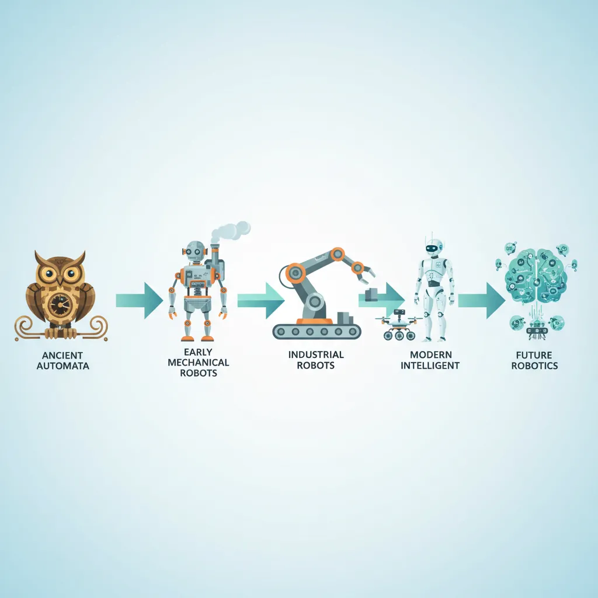
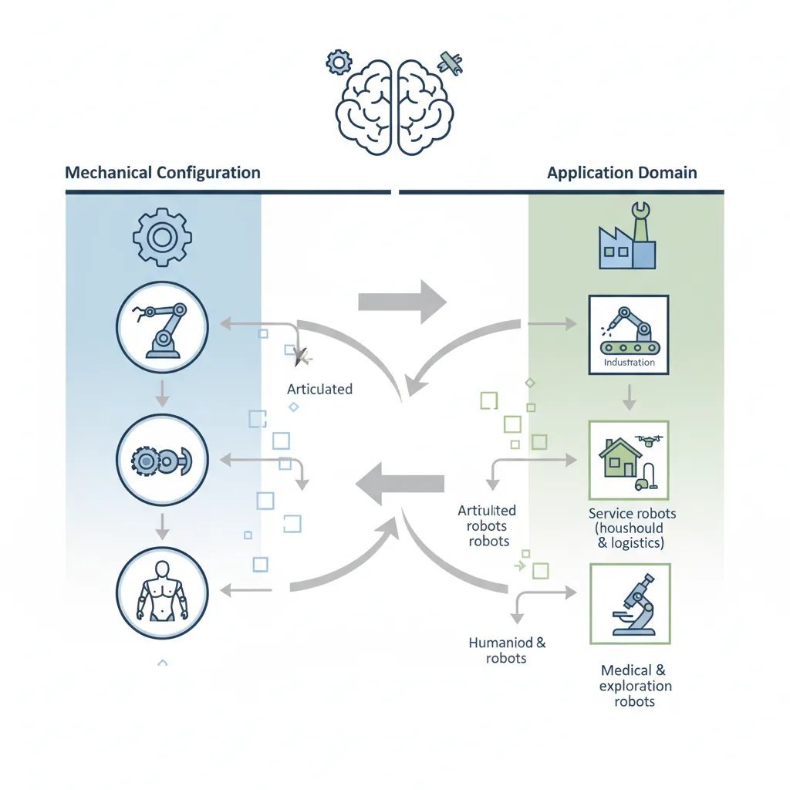
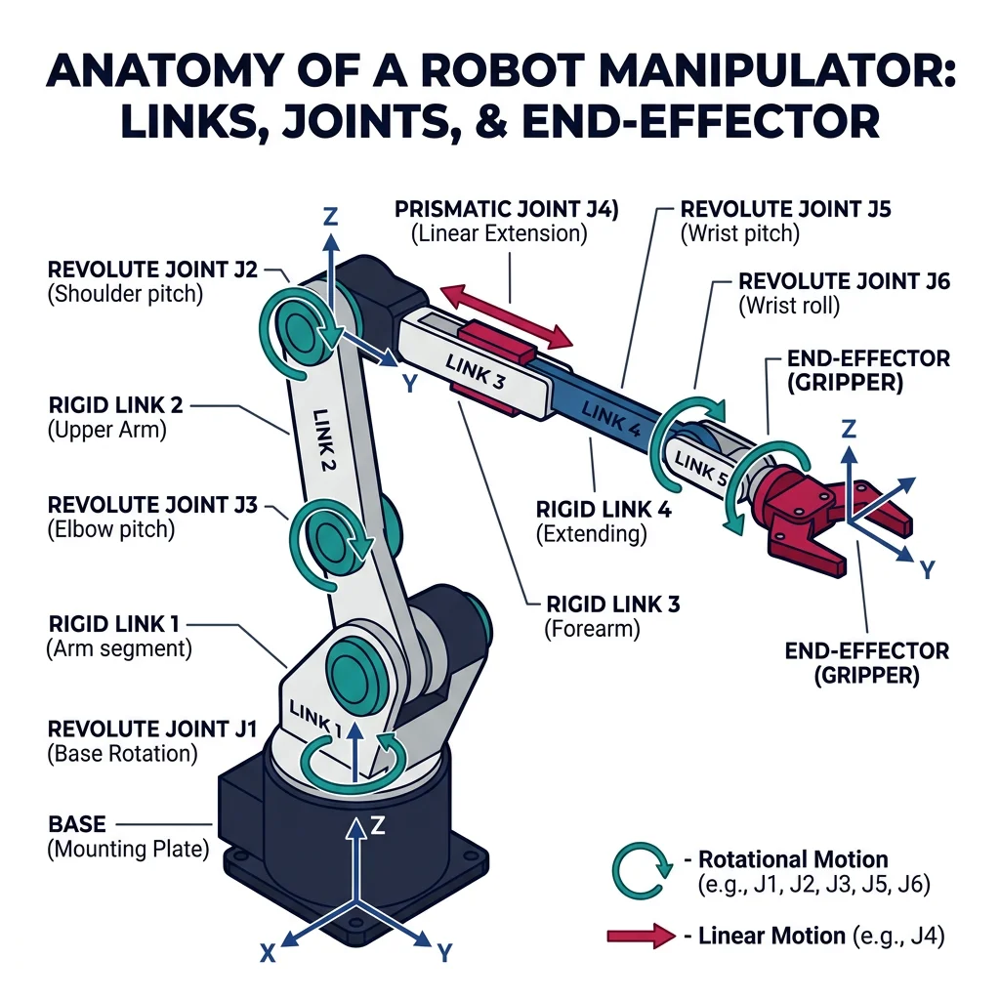
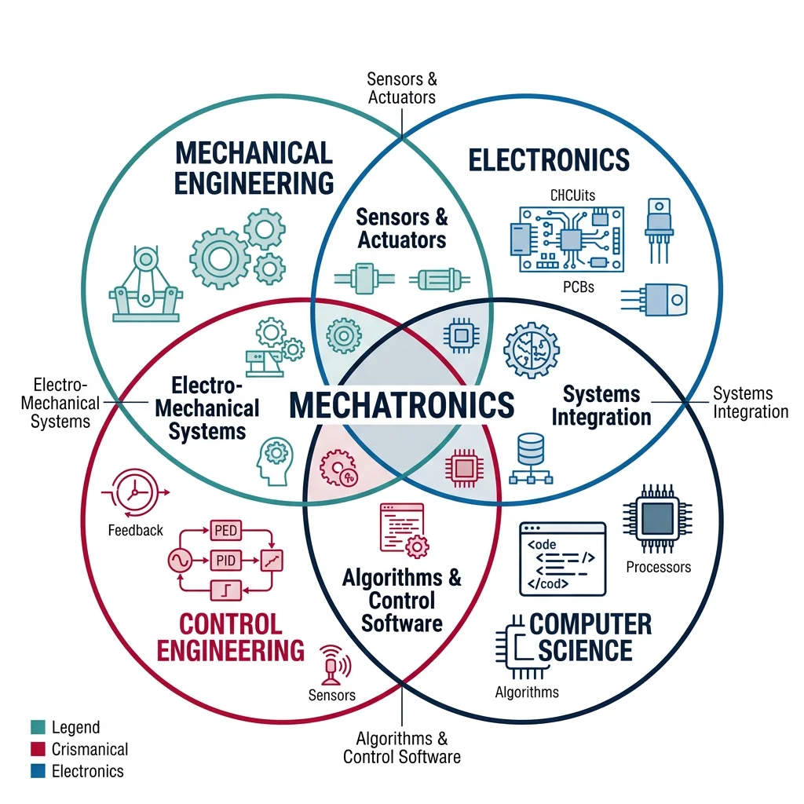
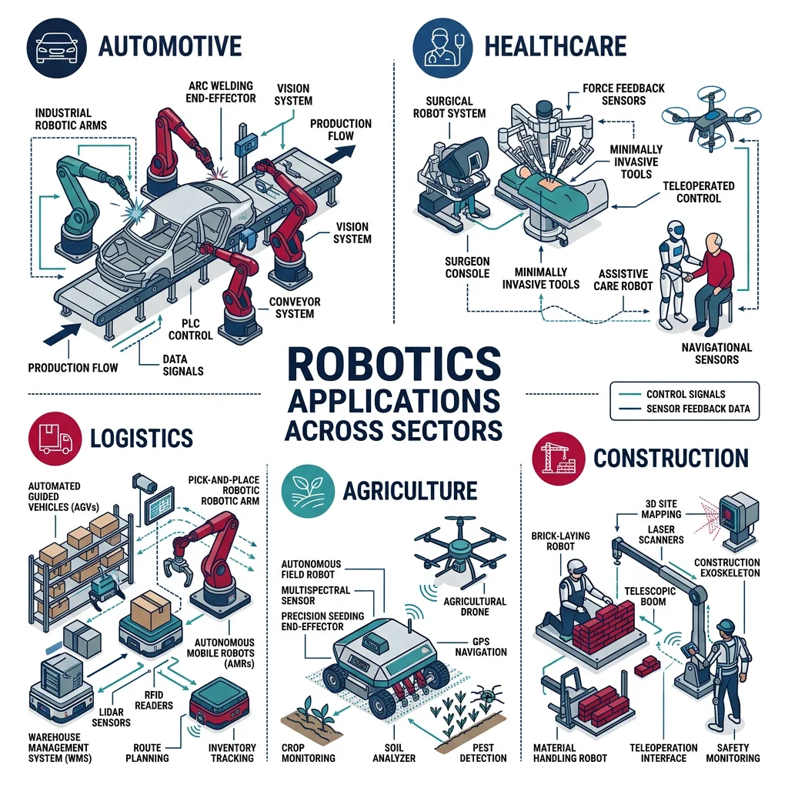

What Is Robotics?
Robotics & Automation Mastery
Introduction to Robotics
History, types, DOF, architectures, mechatronics, ethicsSensors & Perception Systems
Encoders, IMUs, LiDAR, cameras, sensor fusion, Kalman filters, SLAMActuators & Motion Control
DC/servo/stepper motors, hydraulics, drivers, gear systemsKinematics (Forward & Inverse)
DH parameters, transformations, Jacobians, workspace analysisDynamics & Robot Modeling
Newton-Euler, Lagrangian, inertia, friction, contact modelingControl Systems & PID
PID tuning, state-space, LQR, MPC, adaptive & robust controlEmbedded Systems & Microcontrollers
Arduino, STM32, RTOS, PWM, serial protocols, FPGARobot Operating Systems (ROS)
ROS2, nodes, topics, Gazebo, URDF, navigation stacksComputer Vision for Robotics
Calibration, stereo vision, object recognition, visual SLAMAI Integration & Autonomous Systems
ML, reinforcement learning, path planning, swarm roboticsHuman-Robot Interaction (HRI)
Cobots, gesture/voice control, safety standards, social roboticsIndustrial Robotics & Automation
PLC, SCADA, Industry 4.0, smart factories, digital twinsMobile Robotics
Wheeled/legged robots, autonomous vehicles, drones, marine roboticsSafety, Reliability & Compliance
Functional safety, redundancy, ISO standards, cybersecurityAdvanced & Emerging Robotics
Soft robotics, bio-inspired, surgical, space, nano-roboticsSystems Integration & Deployment
HW/SW co-design, testing, field deployment, lifecycleRobotics Business & Strategy
Startups, product-market fit, manufacturing, go-to-marketComplete Robotics System Project
Autonomous rover, pick-and-place arm, delivery robot, swarm simRobotics is the interdisciplinary branch of engineering and science that deals with the design, construction, operation, and use of robots. At its heart, a robot is a programmable machine capable of carrying out a series of actions automatically — but that simple definition barely scratches the surface.
The word "robot" comes from the Czech word robota, meaning "forced labor" or "drudgery." It was first used in Karel ÄŒapek's 1920 play R.U.R. (Rossum's Universal Robots), where artificial beings were created to serve humans. Today, robots range from simple pick-and-place arms on factory floors to self-driving cars, surgical assistants, and planet-exploring rovers.
The Interdisciplinary Nature of Robotics
Robotics sits at the crossroads of multiple engineering and science disciplines. No single field owns robotics — it demands a blend of knowledge:
| Discipline | Contribution to Robotics | Example |
|---|---|---|
| Mechanical Engineering | Structure, joints, actuators, kinematics | Robot arm linkages, gear trains |
| Electrical Engineering | Motors, circuits, power systems, sensors | Motor drivers, encoder circuits |
| Computer Science | Algorithms, AI, computer vision, planning | Path-planning algorithms, neural networks |
| Control Engineering | Feedback loops, stability, PID controllers | Balancing a two-wheeled robot |
| Mathematics | Linear algebra, calculus, probability | Transformation matrices, Kalman filters |
| Biology / Neuroscience | Bio-inspired designs, neural architectures | Gecko-inspired grippers, neural nets |
Robot vs. Machine: What's the Difference?
Not every machine is a robot. The key differentiators are:
- Sensing — The ability to perceive the environment (cameras, touch sensors, encoders)
- Processing / Decision-Making — A controller that interprets sensor data and decides actions
- Actuation — The ability to interact with or change the environment (motors, grippers)
A washing machine follows a fixed program and doesn't sense its environment adaptively — it's an automated machine but not a robot. A Roomba vacuum, however, senses obstacles with IR and bump sensors, processes that data to plan a cleaning path, and actuates its wheels and brushes. That makes it a robot.
# Simple classification: Is it a robot?
import json
def classify_machine(name, can_sense, can_process, can_actuate, is_programmable):
"""Classify whether a machine qualifies as a robot."""
score = sum([can_sense, can_process, can_actuate, is_programmable])
if score == 4:
classification = "Robot"
elif score == 3:
classification = "Semi-Autonomous Machine"
elif score >= 1:
classification = "Automated Machine"
else:
classification = "Passive Tool"
result = {
"name": name,
"classification": classification,
"sense": can_sense,
"process": can_process,
"actuate": can_actuate,
"programmable": is_programmable,
"score": f"{score}/4"
}
return result
# Test several machines
machines = [
("Roomba Vacuum", True, True, True, True),
("Industrial Robot Arm (FANUC)", True, True, True, True),
("Washing Machine", False, False, True, True),
("Tesla Autopilot", True, True, True, True),
("Hammer", False, False, False, False),
("CNC Mill", True, True, True, True),
]
for args in machines:
result = classify_machine(*args)
print(f"{result['name']:30s} → {result['classification']:25s} (Score: {result['score']})")
History & Evolution of Robotics
The dream of creating artificial beings is as old as civilization itself. Understanding history helps us appreciate how far we've come — and hints at where we're heading.

Ancient Automata (350 BC – 1700s)
The idea of mechanized beings began long before electricity:
- 350 BC — Archytas' Pigeon: The Greek mathematician built a wooden bird powered by steam that could reportedly fly up to 200 meters. This is considered the earliest known "robot."
- 1st Century AD — Hero of Alexandria: Created automated theaters with moving figurines, self-opening temple doors powered by steam, and a coin-operated holy water dispenser — arguably the first vending machine.
- 1206 — Al-Jazari: The Islamic polymath built programmable automata including a hand-washing machine and a musical robot band on a boat. His Book of Knowledge of Ingenious Mechanical Devices documented 100+ mechanisms.
- 1495 — Leonardo da Vinci's Knight: Da Vinci designed a mechanical knight that could sit, raise its visor, and move its arms using a system of pulleys, gears, and cables.
- 1770s — Jaquet-Droz Automata: Swiss watchmakers built "The Writer," "The Musician," and "The Draughtsman" — mechanical dolls that could write custom messages with a quill pen.
The Industrial Revolution & Early Automation (1800s – 1960s)
- 1801 — Jacquard Loom: Joseph-Marie Jacquard's programmable loom used punched cards to control weaving patterns — a direct ancestor of computer programming.
- 1898 — Nikola Tesla: Demonstrated a radio-controlled boat at Madison Square Garden — the first remotely operated machine (telerobot).
- 1921 — "Robot" coined: Karel ÄŒapek's play R.U.R. introduced the word, depicting artificial humanoids that rebel against humans.
- 1942 — Asimov's Three Laws: Isaac Asimov published the Three Laws of Robotics in his short story Runaround, profoundly shaping how we think about robot ethics.
- 1954 — Unimate: George Devol patented the first programmable industrial robot. In 1961, Unimate began work at a General Motors die-casting plant, lifting and stacking hot metal parts.
- 1966 — Shakey the Robot: Developed at SRI International, Shakey was the first mobile robot that could reason about its actions using AI planning.
Case Study: Unimate — The Robot That Changed Manufacturing
When Unimate was installed at GM's Trenton plant in 1961, it performed die-casting extraction — a dangerous job that exposed workers to extreme heat and toxic fumes. The 2,700-pound hydraulic arm could lift 500 pounds and was programmed by moving it through desired positions and recording the joint angles on a magnetic drum.
Impact: Unimate reduced workplace injuries by 60% at the installation site, operated 24/7 without fatigue, and paid for itself within 18 months. George Devol and Joseph Engelberger (the "Father of Robotics") went on to found Unimation, Inc., launching the industrial robotics industry.
Legacy: Today, over 4 million industrial robots operate worldwide (IFR 2025), handling everything from welding and painting to electronics assembly and food processing.
The Modern Era (1970s – Present)
| Decade | Key Milestone | Significance |
|---|---|---|
| 1970s | Stanford Arm, PUMA robot | First electric computer-controlled arm; widespread industrial adoption |
| 1980s | SCARA robots, machine vision | High-speed assembly; robots begin "seeing" their environment |
| 1990s | Sojourner Mars Rover, Honda P2 | Space exploration; first full-size humanoid robot walks |
| 2000s | Roomba, da Vinci Surgical, DARPA Grand Challenge | Consumer robotics; surgical robots; autonomous vehicles |
| 2010s | Boston Dynamics Atlas, collaborative robots (cobots) | Dynamic legged locomotion; safe human-robot co-work |
| 2020s | Perseverance + Ingenuity, Tesla Optimus, GPT-powered robots | Helicopter flight on Mars; humanoid general-purpose; LLM integration |
Types of Robots
Robots come in an extraordinary variety of forms, each optimized for specific tasks and environments. Understanding the major categories helps you choose the right architecture for a given application.

Industrial Robots
These are the workhorses of manufacturing — fixed-base manipulators that perform repetitive tasks with high speed and precision:
| Configuration | DOF | Workspace Shape | Typical Use | Example |
|---|---|---|---|---|
| Cartesian (Gantry) | 3 | Rectangular box | CNC machines, 3D printers, pick-and-place | Güdel gantry systems |
| Cylindrical | 3 | Cylinder | Assembly, spot welding | Seiko cylindrical robots |
| Spherical (Polar) | 3 | Partial sphere | Material handling, arc welding | Stanford Arm |
| SCARA | 4 | Cylindrical (horizontal) | Electronics assembly, packaging | Epson SCARA T-series |
| Articulated | 4–7 | Complex sphere | Welding, painting, material handling | FANUC M-20, ABB IRB 6700 |
| Delta (Parallel) | 3–4 | Dome / cone | High-speed pick-and-place, food packaging | ABB FlexPicker IRB 360 |
Service & Collaborative Robots
Service robots operate outside traditional manufacturing, performing tasks for humans in everyday environments:
- Domestic robots: Vacuuming (Roomba), lawn mowing (Husqvarna Automower), pool cleaning
- Healthcare robots: Surgical assistants (da Vinci Xi), rehabilitation exoskeletons (Ekso GT), pharmacy dispensers
- Hospitality robots: Hotel delivery (Relay by Savioke), restaurant servers (Pudu BellaBot)
- Agricultural robots: Crop monitoring drones, autonomous tractors (John Deere), fruit-picking arms
Collaborative robots (cobots) are designed to work alongside humans without safety cages:
Case Study: Universal Robots — The Cobot Revolution
Founded in Denmark in 2005, Universal Robots (UR) launched the UR5 in 2008 — the world's first commercially viable collaborative robot. Unlike traditional industrial robots that require safety cages, the UR5 uses force-torque sensing on every joint to detect collisions and automatically stop.
Key Innovation: Any worker can "teach" a UR cobot by hand-guiding it through desired motions — no programming expertise needed. This reduced deployment time from months to hours.
Market Impact: UR now has 75,000+ cobots deployed across 40+ countries. The cobot market is projected to reach $12 billion by 2028, growing at 34% CAGR.
Human-Centric Design: Lightweight (under 25 kg), round edges, limited speed and force, and compliant with ISO/TS 15066 safety standards make cobots safe for direct human interaction.
Mobile & Autonomous Robots
- Wheeled robots: Autonomous mobile robots (AMRs) like Kiva/Amazon warehouse robots, AGVs (automated guided vehicles)
- Legged robots: Boston Dynamics Spot (quadruped) and Atlas (bipedal humanoid)
- Aerial robots (UAVs/drones): Delivery drones (Wing by Alphabet), inspection drones (Skydio), agricultural spray drones (DJI Agras)
- Underwater robots (AUVs/ROVs): Deep-sea exploration (NOAA ROVs), pipeline inspection, ocean mapping
- Autonomous vehicles: Self-driving cars (Waymo, Cruise), autonomous trucks (TuSimple, Aurora)
Specialized Robots
- Humanoid robots: Tesla Optimus, Agility Robotics Digit — designed for general-purpose human environments
- Soft robots: Made from flexible, deformable materials — ideal for delicate tasks like food handling or surgery
- Swarm robots: Large groups of small, simple robots that coordinate like ant colonies — used in search-and-rescue, environmental monitoring
- Space robots: Mars rovers (Curiosity, Perseverance), robotic arms on the ISS (Canadarm2), satellite servicing
- Micro/Nano robots: Millimeter-scale robots for targeted drug delivery, minimally invasive surgery
Robot Anatomy & Architecture
Every robot — from a simple Roomba to a 6-axis welding arm — is built from the same fundamental components:
- Mechanical Structure — Links, joints, end-effectors (the "body")
- Actuators — Motors, hydraulics, pneumatics (the "muscles")
- Sensors — Encoders, cameras, force sensors (the "senses")
- Controller — Microcontrollers, PLCs, computers (the "brain")
- Power Supply — Batteries, tethered power, fuel cells (the "heart")
In a manipulator robot (robot arm), the structure consists of a series of rigid links connected by joints. Each joint provides one degree of freedom — either revolute (rotation) or prismatic (linear sliding).

# Visualizing a simple 2-link robot arm
import numpy as np
import matplotlib.pyplot as plt
def draw_2link_arm(theta1_deg, theta2_deg, L1=1.0, L2=0.8):
"""Draw a 2-link planar robot arm given joint angles in degrees."""
theta1 = np.radians(theta1_deg)
theta2 = np.radians(theta2_deg)
# Joint positions
x0, y0 = 0, 0 # Base
x1 = L1 * np.cos(theta1)
y1 = L1 * np.sin(theta1)
x2 = x1 + L2 * np.cos(theta1 + theta2)
y2 = y1 + L2 * np.sin(theta1 + theta2)
# Plot
fig, ax = plt.subplots(1, 1, figsize=(6, 6))
ax.plot([x0, x1, x2], [y0, y1, y2], 'o-', linewidth=4,
markersize=10, color='#3B9797', markerfacecolor='#BF092F')
ax.plot(x0, y0, 's', markersize=14, color='#132440') # Base
ax.plot(x2, y2, '*', markersize=16, color='#BF092F') # End-effector
ax.set_xlim(-2.2, 2.2)
ax.set_ylim(-2.2, 2.2)
ax.set_aspect('equal')
ax.grid(True, alpha=0.3)
ax.set_title(f'2-Link Arm: θ1={theta1_deg}°, θ2={theta2_deg}°', fontsize=14)
ax.set_xlabel('X (meters)')
ax.set_ylabel('Y (meters)')
# Annotate
ax.annotate(f'End-Effector\n({x2:.2f}, {y2:.2f})',
xy=(x2, y2), xytext=(x2+0.3, y2+0.3),
arrowprops=dict(arrowstyle='->', color='#BF092F'),
fontsize=10, color='#BF092F')
plt.tight_layout()
plt.show()
# Draw the arm at θ1 = 45°, θ2 = 30°
draw_2link_arm(45, 30)
Degrees of Freedom (DOF)
Degrees of Freedom define the number of independent parameters needed to completely describe a robot's position/configuration. In simple terms, DOF = the number of independent motions a robot can make.
Key relationships:
- A free rigid body in 3D space has 6 DOF — 3 translational + 3 rotational
- To position and orient an end-effector anywhere in 3D, a robot needs at least 6 DOF
- A robot with >6 DOF is redundant — it can reach the same point in multiple configurations (useful for obstacle avoidance)
- A robot with <6 DOF has a restricted workspace
# Calculating DOF using Grübler's (mobility) formula
def grubler_formula(n_links, n_joints, joint_freedoms):
"""
Calculate Degrees of Freedom using Grübler's formula.
DOF = 6*(n-1) - Σ(6 - fi) for spatial mechanisms
DOF = 3*(n-1) - Σ(3 - fi) for planar mechanisms
Parameters
----------
n_links : int
Number of links including the fixed base (ground)
n_joints : int
Number of joints
joint_freedoms : list of int
DOF provided by each joint (1 for revolute/prismatic, 2 for universal, 3 for spherical)
"""
# Spatial formula
mobility = 6 * (n_links - 1) - sum(6 - f for f in joint_freedoms)
return mobility
# Example 1: 6R articulated robot (like FANUC M-20)
# 7 links (including base), 6 revolute joints (each = 1 DOF)
dof_1 = grubler_formula(n_links=7, n_joints=6, joint_freedoms=[1]*6)
print(f"6R Articulated Robot DOF: {dof_1}") # Expected: 6
# Example 2: SCARA robot (4 joints: R, R, P, R)
dof_2 = grubler_formula(n_links=5, n_joints=4, joint_freedoms=[1]*4)
print(f"SCARA Robot DOF: {dof_2}") # Expected: 4
# Example 3: 7R redundant manipulator (like KUKA LBR iiwa)
dof_3 = grubler_formula(n_links=8, n_joints=7, joint_freedoms=[1]*7)
print(f"7R Redundant Robot DOF: {dof_3}") # Expected: 7
# Example 4: Delta robot (parallel mechanism — simplified)
# Delta has 3 independent actuated DOF, but the constraint analysis
# requires considering closed-loop kinematics separately
print(f"\nDelta robot: 3 DOF (position only, no orientation)")
print(f"Delta+rotation: 4 DOF (with wrist rotation)")
Workspace & Robot Configurations
The workspace is the set of all points the end-effector can reach. There are two types:
- Reachable workspace: All points the end-effector can reach with at least one orientation
- Dexterous workspace: All points the end-effector can reach with all orientations
# Visualize the workspace of a 2-link planar arm
import numpy as np
import matplotlib.pyplot as plt
def plot_workspace(L1=1.0, L2=0.7, num_samples=5000):
"""Plot the reachable workspace of a 2-link planar robot."""
theta1 = np.random.uniform(0, 2 * np.pi, num_samples)
theta2 = np.random.uniform(-np.pi, np.pi, num_samples)
# Forward kinematics
x = L1 * np.cos(theta1) + L2 * np.cos(theta1 + theta2)
y = L1 * np.sin(theta1) + L2 * np.sin(theta1 + theta2)
fig, ax = plt.subplots(figsize=(7, 7))
ax.scatter(x, y, s=1, alpha=0.3, color='#3B9797', label='Reachable Points')
# Draw workspace boundaries
outer_circle = plt.Circle((0, 0), L1 + L2, fill=False,
linestyle='--', color='#BF092F', linewidth=2, label=f'Outer (r={L1+L2})')
inner_circle = plt.Circle((0, 0), abs(L1 - L2), fill=False,
linestyle='--', color='#132440', linewidth=2, label=f'Inner (r={abs(L1-L2)})')
ax.add_patch(outer_circle)
ax.add_patch(inner_circle)
ax.plot(0, 0, 's', markersize=12, color='#132440', label='Base')
ax.set_xlim(-2.2, 2.2)
ax.set_ylim(-2.2, 2.2)
ax.set_aspect('equal')
ax.grid(True, alpha=0.3)
ax.legend(loc='upper right')
ax.set_title(f'2-Link Robot Workspace (L1={L1}, L2={L2})', fontsize=14)
ax.set_xlabel('X (meters)')
ax.set_ylabel('Y (meters)')
plt.tight_layout()
plt.show()
print(f"Outer boundary radius: {L1 + L2:.2f} m")
print(f"Inner boundary radius: {abs(L1 - L2):.2f} m")
print(f"Workspace is an annulus (ring) shape")
plot_workspace()
Mechatronics Fundamentals
Robotics is really applied mechatronics — the synergistic integration of mechanical engineering, electronics, control engineering, and computer science. The term was coined by Tetsuro Mori at Yaskawa Electric in 1969.

Mechatronics = Mechanics + Electronics + Control + Computing
None of these alone creates a robot. It's their integration that produces intelligent mechanical systems.
Each discipline contributes a critical piece:
| Component | Discipline | Role in a Robot | Examples |
|---|---|---|---|
| Mechanical Structure | Mechanical Eng. | Physical form, strength, motion | Links, gears, bearings, end-effectors |
| Actuators | Electrical / Mech. Eng. | Convert energy to motion | DC motors, servos, pneumatic cylinders |
| Sensors | Electrical / Physics | Measure state and environment | Encoders, IMUs, cameras, force sensors |
| Controller | Control / CS | Decision-making, feedback loops | PID controllers, microcontrollers, PLCs |
| Software | Computer Science | Algorithms, planning, learning | ROS, path planners, neural networks |
The Sense-Think-Act Cycle
Every autonomous robot operates on a continuous loop often called the Sense-Think-Act (STA) cycle:
- Sense: Gather data from the environment using sensors (cameras, LiDAR, touch sensors, encoders)
- Think: Process data, update world model, plan next action (algorithms, AI, control laws)
- Act: Execute the planned action through actuators (move a joint, fire a thruster, close a gripper)
# Simulation of the Sense-Think-Act cycle for a simple line-following robot
import random
class LineFollowingRobot:
"""Simple simulation of a line-following robot using Sense-Think-Act."""
def __init__(self):
self.position = 0.0 # Lateral offset from the line (0 = centered)
self.heading = 0.0 # Heading error in degrees
self.speed = 1.0 # Forward speed (m/s)
self.sensor_noise = 0.05 # Sensor noise standard deviation
def sense(self):
"""Read the line position relative to the robot (with noise)."""
# Simulated IR sensor reading: offset from center line
noise = random.gauss(0, self.sensor_noise)
measured_offset = self.position + noise
return measured_offset
def think(self, sensor_reading, kp=2.0, kd=0.5):
"""Simple proportional-derivative controller to decide steering."""
error = sensor_reading # How far off the line
derivative = error - getattr(self, '_prev_error', 0)
self._prev_error = error
# PD control: steering correction
steering = -(kp * error + kd * derivative)
steering = max(-30, min(30, steering)) # Limit to ±30 degrees
return steering
def act(self, steering):
"""Apply steering correction and update position."""
dt = 0.1 # Time step
self.heading += steering * dt
self.position += self.speed * (self.heading / 90.0) * dt
def step(self):
"""Execute one Sense-Think-Act cycle."""
sensor_data = self.sense()
steering = self.think(sensor_data)
self.act(steering)
return self.position, self.heading, steering
# Simulate 50 steps with initial offset
robot = LineFollowingRobot()
robot.position = 0.5 # Start 0.5m off the line
print(f"{'Step':>4} {'Position':>10} {'Heading':>10} {'Steering':>10}")
print("-" * 50)
for step in range(20):
pos, heading, steer = robot.step()
print(f"{step:>4} {pos:>10.4f} {heading:>10.4f} {steer:>10.4f}")
print(f"\nFinal offset from line: {robot.position:.4f} m")
print(f"Robot {'converged' if abs(robot.position) < 0.05 else 'still correcting'}!")
Robot Programming Paradigms
How do we tell a robot what to do? There are several approaches, each suited to different levels of complexity:
| Method | How It Works | Pros | Cons | Used By |
|---|---|---|---|---|
| Teach Pendant | Manually jog the robot to positions and record them | Simple, no coding required | Slow, operator must be present | FANUC, ABB, KUKA |
| Hand Guiding | Physically move the robot arm to desired positions | Very intuitive, fast setup | Limited to collaborative robots | Universal Robots, Franka |
| Offline Programming | Program in simulation software, then upload | No production downtime | Requires accurate 3D model | RoboDK, Delmia, RobotStudio |
| Text-Based Languages | Write robot programs in manufacturer-specific or standard languages | Flexible, precise control | Requires programming skill | RAPID (ABB), KRL (KUKA), Python + ROS |
| Visual / Block Programming | Drag-and-drop programming blocks | Low barrier, educational | Limited for complex logic | Scratch, Blockly, UR PolyScope |
| AI / Learning-Based | Robot learns from demonstrations or trial-and-error | Handles complex tasks, adapts | Data-hungry, hard to verify safety | DeepMind, OpenAI, Google RT-2 |
Your First Robot Program (Simulated)
Let's write a simple robot program that moves a 2-joint arm through a sequence of positions — like a teach pendant recording:
# Simulated teach-pendant programming: record and playback joint positions
import time
class SimpleRobotArm:
"""Simulated 2-DOF robot arm with teach-and-playback capability."""
def __init__(self, name="MyRobot"):
self.name = name
self.joint1 = 0.0 # Shoulder angle (degrees)
self.joint2 = 0.0 # Elbow angle (degrees)
self.program = [] # Recorded positions
self.gripper_closed = False
def move_to(self, j1, j2, speed="fast"):
"""Move both joints to target positions."""
self.joint1 = j1
self.joint2 = j2
speed_label = "🏃 FAST" if speed == "fast" else "🐢 SLOW"
print(f" [{self.name}] Moving to J1={j1:6.1f}°, J2={j2:6.1f}° ({speed_label})")
def gripper(self, action):
"""Open or close the gripper."""
self.gripper_closed = (action == "close")
icon = "✊" if self.gripper_closed else "✋"
print(f" [{self.name}] Gripper {action.upper()} {icon}")
def record_position(self, label=""):
"""Record current position to the program."""
self.program.append({
"j1": self.joint1,
"j2": self.joint2,
"gripper": "close" if self.gripper_closed else "open",
"label": label
})
print(f" 📍 Position recorded: {label}")
def playback(self, cycles=1):
"""Play back recorded program."""
print(f"\n{'='*50}")
print(f" PLAYBACK MODE — {len(self.program)} waypoints, {cycles} cycle(s)")
print(f"{'='*50}")
for cycle in range(1, cycles + 1):
print(f"\n --- Cycle {cycle}/{cycles} ---")
for i, wp in enumerate(self.program, 1):
print(f"\n Step {i}: {wp['label']}")
self.move_to(wp['j1'], wp['j2'])
self.gripper(wp['gripper'])
print(f"\n ✅ Program complete!")
# --- Programming a pick-and-place task ---
arm = SimpleRobotArm("UR5e")
print("=== TEACH MODE (Recording Positions) ===\n")
# Step 1: Home position
arm.move_to(0, 0)
arm.gripper("open")
arm.record_position("Home")
# Step 2: Move above pick location
arm.move_to(45, -30)
arm.gripper("open")
arm.record_position("Above Pick")
# Step 3: Lower to pick
arm.move_to(45, -60)
arm.gripper("close")
arm.record_position("Pick Object")
# Step 4: Lift
arm.move_to(45, -30)
arm.record_position("Lift")
# Step 5: Move above place location
arm.move_to(-45, -30)
arm.record_position("Above Place")
# Step 6: Lower to place
arm.move_to(-45, -60)
arm.gripper("open")
arm.record_position("Place Object")
# Step 7: Return home
arm.move_to(0, 0)
arm.record_position("Return Home")
# Playback
arm.playback(cycles=2)
Real-World Applications
Robots have permeated virtually every industry. Here are the major application domains:

| Industry | Application | Robot Type | Impact |
|---|---|---|---|
| Automotive | Welding, painting, assembly | 6-axis articulated | 80% of a car body is robot-welded |
| Electronics | SMT placement, testing, inspection | SCARA, delta | 10,000+ component placements/hour |
| Healthcare | Surgery, rehabilitation, pharmacy | Surgical arms, exoskeletons | da Vinci: 12M+ surgeries performed |
| Logistics | Order picking, sorting, delivery | AMRs, drones | Amazon: 750K+ robots in warehouses |
| Agriculture | Harvesting, spraying, monitoring | Autonomous tractors, drones | 30% reduction in pesticide use |
| Construction | 3D printing, bricklaying, demolition | AMRs, exoskeletons | Hadrian X: 200 bricks/hour |
| Space | Exploration, satellite servicing, habitat | Rovers, arms, humanoids | Mars rovers: 10+ years of operation |
| Defense | EOD, surveillance, logistics | UGVs, UAVs, AUVs | 50,000+ military robots deployed globally |
Industry Case Studies
Case Study: The da Vinci Surgical System
The da Vinci system by Intuitive Surgical is the world's most successful surgical robot. It's a teleoperated system — surgeons sit at a console and manipulate instrument arms that translate hand movements (scaled down 3:1) to micro-instruments inside the patient.
Key Specifications:
- 4 robotic arms with 7 DOF each (more dexterity than a human wrist)
- 3D HD stereoscopic vision with 10× magnification
- Tremor elimination: filters out hand tremor entirely
- Instruments as small as 5mm diameter
Results: Reduced blood loss by 50%, hospital stays cut from 5 days to 1-2 days, and complication rates dropped significantly. Over 12 million procedures performed worldwide across 70+ countries.
Case Study: Amazon Robotics & the Kiva Revolution
In 2012, Amazon acquired Kiva Systems for $775 million — small orange mobile robots that carry entire shelving units to human pickers. Instead of workers walking miles through warehouses, the shelves come to them.
Scale: Over 750,000 robots operate across Amazon fulfillment centers worldwide. The robots navigate using 2D barcodes on the floor, communicate via Wi-Fi, and can carry up to 1,360 kg.
Impact:
- Order processing time reduced from 60-75 minutes to 15 minutes
- Storage capacity increased by 50% (robots can pack shelves closer together)
- Operating cost reduced by ~20% per fulfillment center
- Enabled same-day and next-day delivery at scale
Latest: Amazon's Sparrow robot (2022) can pick and sort individual items — a task that was previously too complex for robots due to the variety of shapes and sizes.
Case Study: Mars Perseverance & Ingenuity
NASA's Perseverance rover landed on Mars in February 2021, carrying the Ingenuity helicopter — the first powered aircraft to fly on another planet. Together, they represent the pinnacle of autonomous robotic exploration.
Perseverance Specs:
- Weight: 1,025 kg; Size: 3 × 2.7 × 2.2 meters
- 23 cameras, 2 microphones, 7 scientific instruments
- 7-DOF robotic arm with drill for rock core sampling
- MOXIE: converts COâ'' to Oâ'' (in-situ resource utilization)
- Signal delay: 4–24 minutes — must operate autonomously
Ingenuity: Originally designed for 5 flights, it completed 72 flights before its mission ended in January 2024. Weighing only 1.8 kg, it proved that powered flight works in Mars' 1% atmosphere.
Ethics & Social Impact
As robots become more capable and widespread, they raise profound questions about society, labor, and safety:
Asimov's Three Laws (1942)
- A robot may not injure a human being or, through inaction, allow a human being to come to harm.
- A robot must obey orders given by human beings except where such orders conflict with the First Law.
- A robot must protect its own existence as long as this does not conflict with the First or Second Law.
While Asimov's laws are fictional, they highlight real concerns that robotics engineers face daily. Modern approaches include:
Key Ethical Considerations
| Issue | Concern | Real Example | Mitigation Approach |
|---|---|---|---|
| Job Displacement | Robots replacing human workers | Automotive assembly reduced 50% of manual jobs | Reskilling programs, cobots that augment workers |
| Safety | Robots injuring humans | Fatal incident at VW plant (2015) | ISO 10218, ISO/TS 15066, force-limiting |
| Autonomous Weapons | Lethal autonomous weapons systems (LAWS) | Drone warfare, autonomous targeting | Campaign to Stop Killer Robots, UN debates |
| Privacy | Surveillance capabilities of robots | Security patrol robots with facial recognition | Data minimization, consent frameworks |
| Bias & Fairness | AI-driven robots inheriting biased training data | Facial recognition performing poorly on darker skin | Diverse training data, algorithmic auditing |
| Accountability | Who's responsible when a robot causes harm? | Autonomous vehicle accidents | Legal frameworks, insurance, liability chains |
Interactive Tool: Robot Specification Sheet Generator
Use this tool to define and document a robot's key specifications. Generate a professional specification sheet as a downloadable Word, Excel, PDF, or PowerPoint document.
Robot Specification Sheet
Enter the robot's specifications below. Download as Word, Excel, PDF, or PPTX.
All data stays in your browser. Nothing is sent to or stored on any server.
Exercises & Challenges
Exercise 1: Classify Real Machines
For each machine below, determine if it qualifies as a robot (meets all 3 criteria: sense, process, actuate). Justify your answer.
- A traffic light system with embedded timers
- A thermostat-controlled home HVAC system
- A da Vinci surgical system
- A cruise control system in a car
- A coin-operated vending machine
Exercise 2: DOF Calculation
Using Grübler's formula, calculate the DOF for:
- A planar 3-link mechanism with 3 revolute joints (use the planar formula: DOF = 3(n-1) - 2j)
- A spatial 4-link mechanism with 4 revolute joints
- A Stewart platform (6 prismatic actuators connecting a fixed base to a moving platform)
Exercise 3: Python — Forward Position of a 3-Link Arm
Extend the 2-link arm code from the Robot Anatomy section to handle 3 links. Calculate and print the end-effector position for:
- L1 = 1.0 m, L2 = 0.8 m, L3 = 0.5 m
- θ1 = 30°, θ2 = 45°, θ3 = -20°
# Exercise 3 — Starter code (complete the function)
import numpy as np
def forward_position_3link(theta1_deg, theta2_deg, theta3_deg, L1=1.0, L2=0.8, L3=0.5):
"""Calculate end-effector position for a 3-link planar arm."""
theta1 = np.radians(theta1_deg)
theta2 = np.radians(theta2_deg)
theta3 = np.radians(theta3_deg)
# Joint 1 position
x1 = L1 * np.cos(theta1)
y1 = L1 * np.sin(theta1)
# Joint 2 position
x2 = x1 + L2 * np.cos(theta1 + theta2)
y2 = y1 + L2 * np.sin(theta1 + theta2)
# End-effector position (YOUR CODE: add link 3)
x3 = x2 + L3 * np.cos(theta1 + theta2 + theta3)
y3 = y2 + L3 * np.sin(theta1 + theta2 + theta3)
return x3, y3
# Test
x, y = forward_position_3link(30, 45, -20)
print(f"End-effector position: ({x:.4f}, {y:.4f}) meters")
print(f"Distance from base: {np.sqrt(x**2 + y**2):.4f} meters")
Exercise 4: Research & Reflection
- Pick one robot from the last 5 years that excites you. Write a 200-word summary of what it does, what sensors it uses, and what makes it innovative.
- Identify one ethical concern about robotics that you find most pressing. Propose two concrete steps society could take to address it.
- Take a machine in your home or workplace. Draw a block diagram showing its sensors (if any), controller, and actuators. Does it qualify as a robot?
Exercise 5: Workspace Exploration
Modify the workspace visualization code to explore how link lengths affect workspace:
- Compare L1=1.0, L2=1.0 (equal links) vs. L1=1.5, L2=0.5 (unequal links)
- What happens when L1 = L2? Does the inner boundary disappear? Why?
- What does this mean for a robot designer choosing link lengths?
Conclusion & Next Steps
In this introductory guide, we've covered the foundations that every roboticist needs:
- What robotics is — an interdisciplinary field combining mechanics, electronics, computing, and control
- Historical evolution — from ancient automata to Mars rovers and AI-powered humanoids
- Types of robots — industrial, collaborative, mobile, surgical, space, and more
- Robot anatomy — links, joints, DOF, workspace, and the sense-think-act cycle
- Mechatronics — the integration principle that makes robots possible
- Programming paradigms — from teach pendants to AI-driven learning
- Real-world applications — manufacturing, healthcare, logistics, space, and agriculture
- Ethical considerations — job displacement, safety, autonomy, and accountability